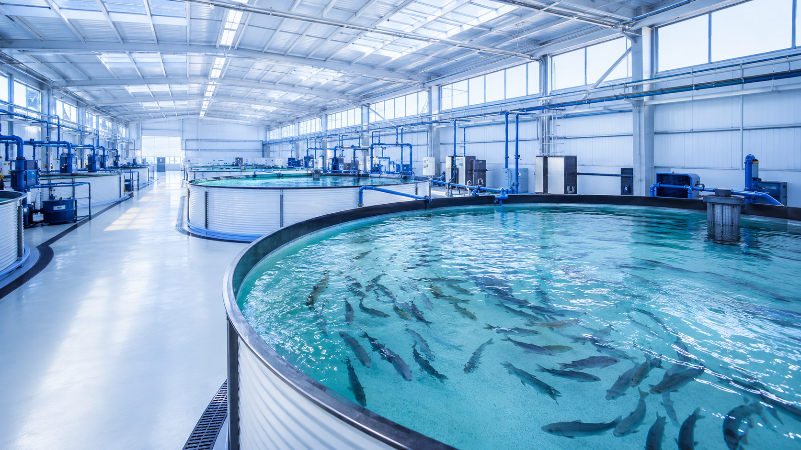

陸上養殖は、海や河川ではなく、陸上に設けた水槽や設備で魚介類を育てる養殖方式です。水温、水質、酸素供給、ろ過、排水を施設側で設計できる一方、設備投資と日々の管理負荷も大きくなります。

海面養殖との違い
海面養殖は自然の海域を活用するため、潮流、水温、赤潮、台風など外部環境の影響を受けます。一方、陸上養殖は水槽、配管、ろ過、酸素供給を施設内に持つため、管理項目を見える化しやすい特徴があります。
ただし、管理しやすいということは、設備設計と運用の責任が施設側に集まるということでもあります。水質管理、電力コスト、清掃、配管メンテナンスを含めた運用設計が重要です。
導入時に見るべきメリットと課題
- 期待できること
生産場所の自由度、外部環境リスクの低減、計画生産、水質管理のしやすさなどが期待されます。
- 課題になりやすいこと
初期投資、電気代、ろ過設備、酸素供給、水質測定、排水処理、日常清掃などの負荷があります。
- 検討の前提
魚種、水量、飼育密度、海水・淡水・汽水、既存設備によって最適な構成は変わります。
水の設計が事業性に関わる
陸上養殖では、補給水、循環水、洗浄水、排水の流れが施設の運用効率に直結します。水をどこから入れ、どのラインで処理し、どこで測定し、どのタイミングで清掃するかを決めておくことで、日常管理のしやすさが変わります。
UFB DUALは、ろ過や酸素供給を置き換えるものではなく、水処理全体を補完する技術として検討します。配管に組み込むことで、補給水や循環ラインなど、施設条件に合わせた活用を検討できます。
相談前に整理しておきたい情報
初期相談では、施設種別、魚種、水量、水槽数、海水・淡水・汽水、配管口径、ポンプ能力、既存のろ過・酸素供給設備、現在の課題を共有いただくと、導入位置の検討が進めやすくなります。